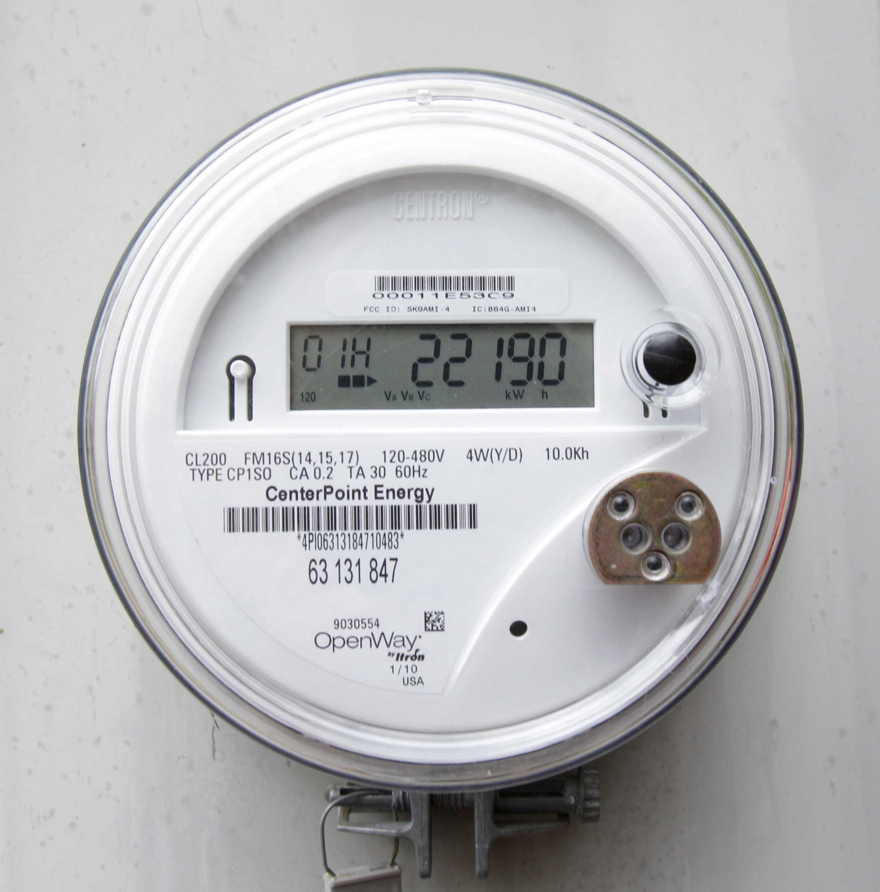

1. The International System of Units (SI)
The International System of Units, commonly known as SI, stands as the universal language of measurement. Established in 1960, it was born out of a global effort to standardize units, facilitating collaboration and eliminating confusion across borders. SI is a coherent system based on seven base units from which all other units are derived:
- Meter (m) - The unit of length.
- Kilogram (kg) - The unit of mass.
- Second (s) - The unit of time.
- Ampere (A) - The unit of electric current.
- Kelvin (K) - The unit of temperature.
- Mole (mol) - The unit of amount of substance.
- Candela (cd) - The unit of luminous intensity.

By employing prefixes such as kilo, milli, micro, and nano, SI offers a scalable and straightforward approach to expressing quantities. For example, a kilometer is 1000 meters, while a milligram is 0.001 grams. The beauty of SI lies in its universality, ensuring that scientists, engineers, and people worldwide share a common understanding of measurement.
2. The Metric System: The SI's Popular Cousin
The metric system has revolutionized the way we measure and quantify the world around us. It has brought order and coherence to the domain of measurements, making it easier for people across the globe to communicate and collaborate effectively. However, various metric systems have emerged over time, each tailored to specific needs and regions. In this article, we explore the differences between some prominent metric systems and understand their significance in diverse contexts.
1. The International System of Units (SI)
The International System of Units, commonly known as SI, is the most widely recognized metric system worldwide. It is endorsed by international organizations such as the International Bureau of Weights and Measures (BIPM) and the International Organization for Standardization (ISO). SI provides a standardized and coherent set of units that serve as the foundation for scientific research, engineering, and global trade.SI has seven base units, from which all other units are derived:
- Meter (m) - The unit of length.
- Kilogram (kg) - The unit of mass.
- Second (s) - The unit of time.
- Ampere (A) - The unit of electric current.
- Kelvin (K) - The unit of temperature.
- Mole (mol) - The unit of amount of substance.
- Candela (cd) - The unit of luminous intensity.

SI's strength lies in its simplicity and universality, ensuring seamless communication between scientists, engineers, and people from different cultures and backgrounds.
2. The Centimeter-Gram-Second (CGS) System
The CGS system is an older metric system that predates SI. It uses centimeters, grams, and seconds as its base units. Historically, the CGS system gained popularity due to its convenience for scientific calculations, particularly in electromagnetism and mechanics.
However, the CGS system has limitations when dealing with large or small quantities, leading to the preference for SI in modern scientific research. Despite this, it still finds some use in specific fields, such as material science and fluid dynamics, where it offers advantages in certain applications.
3. The Meter-Kilogram-Second (MKS) System
The MKS system is another metric system that shares similarities with SI but predates it as well. It employs meters, kilograms, and seconds as its base units. The MKS system gained traction due to its alignment with the metric system's fundamental principles, emphasizing the use of base-10 multiples for easy conversion.While the MKS system contributed to the development of SI, it is not as widely adopted today, as SI has become the globally accepted standard.
4. The Gravitational Metric System (GMS)
The GMS is a variant of the metric system that includes the concept of gravitational units. It uses the meter, kilogram, second, and a gravitational constant to define its units. The GMS has been used historically in geodesy and gravimetry, where precise measurements of Earth's gravity field are essential. Despite its niche applications, the GMS has not gained widespread popularity and has largely been supplanted by SI in most scientific disciplines.5. The Planck Units
The Planck units represent a unique and fundamental system of measurement derived from fundamental physical constants, such as the speed of light, Planck's constant, and the gravitational constant. These units aim to provide natural units of measurement, independent of human-made scales. The Planck units are typically used in theoretical physics and cosmology, particularly in quantum gravity and string theory research. They help in exploring the fundamental nature of the universe and its underlying laws.6. The Industrial Metric System
The Industrial Metric System is a modified version of the metric system used in some countries for specific industrial applications. It adapts the metric units to align better with industrial practices and processes, often incorporating unique variations tailored to industrial needs. While the Industrial Metric System is not standardized globally, it is utilized within specific industries, like engineering and manufacturing, to enhance efficiency and consistency in their operations.Conclusion
Metric systems have played a crucial role in advancing science, technology, and commerce worldwide. The International System of Units (SI) remains the most prominent and universally accepted metric system, serving as the standard for global communication. Other metric systems, such as the CGS, MKS, GMS, and Planck units, cater to specialized fields of study and research.Understanding the differences between these metric systems enables us to appreciate their unique contributions and adaptability to various disciplines. Embracing the strengths of each system, we continue to unravel the mysteries of the universe and make progress in our pursuit of knowledge and innovation.
3. Traditional U.S. Units: A Cultural Legacy

In the vast and diverse landscape of the United States, a rich tapestry of history weaves through its culture, traditions, and even its systems of measurement. Long before the widespread adoption of the metric system, various traditional units of measurement took root across the nation, each with its own unique charm and significance. In this article, we delve into the traditional units that have left an indelible mark on American life and continue to resonate with its people.
. The U.S. Customary System
The U.S. Customary System, also known as the Imperial System, forms the foundation of traditional units of measurement used in the United States. It originated from British colonial units and evolved over time to cater to the needs of American society.- Length: Inches, Feet, and Miles
- Inch (in) - Derived from the width of an adult thumb, the inch is commonly used for small measurements, such as the length of screws or nails.
- Foot (ft) - Based on the average length of a human foot, the foot is used in everyday settings to measure height, distance, and property dimensions.
- Mile (mi) - The mile, equivalent to 5,280 feet, is employed for measuring long distances, especially for roadways and travel.
- Weight: Pounds and Ounces
- Pound (lb) - Initially based on the weight of a grain of barley, the pound serves as the primary unit of weight for groceries, personal items, and body weight.
- Ounce (oz) - One-sixteenth of a pound, the ounce is commonly used for smaller weights, such as food portions or precious metals.
- Volume: Gallons, Quarts, Pints, and Cups
- Gallon (gal) - The gallon, equal to four quarts, finds use in measuring liquid volumes, especially for fuel and beverages.
- Quart (qt) - One-fourth of a gallon, the quart is used for smaller liquid measurements and in recipes.
- Pint (pt) - Half of a quart, the pint is commonly used for liquid quantities, both in cooking and for beverages.
- Cup - Derived from customary drinking vessels, the cup is utilized for cooking measurements and serving beverages.
2. Regional Variations
The United States' vast size and regional diversity have led to some localized variations of traditional units, reflecting the unique history and cultures of different areas.Cord (Firewood Measure)
In some regions, such as the Northeast, the cord is a unit used to measure firewood. It represents a stacked pile of wood, usually 4 feet high, 4 feet wide, and 8 feet long. This practical measurement helps homeowners and businesses manage their firewood needs during colder months.Hand (Horse Measurement)
A hand is a traditional unit used by equestrians to measure the height of horses. One hand equals 4 inches, providing a simple way to determine the size and suitability of horses for various tasks, such as riding or pulling carts.3. Legacy and Contemporary Usage
While the metric system and SI units have become dominant in scientific, international, and official contexts, traditional units persist in various aspects of American life.Informal Measurements
In everyday conversations and colloquialisms, traditional units often find their way into descriptions and comparisons. For instance, weather reports might include temperatures in Fahrenheit, and food recipes frequently list ingredients in cups, teaspoons, or ounces.Historical Significance
Traditional units of measurement serve as a reminder of the nation's history and the influence of its British colonial past. They are a testament to the resilience of cultural heritage, even in the face of global standardization.Conclusion
Traditional units of measurement in the United States carry the weight of history and culture, connecting people to their past while coexisting with modern systems. While the metric system and SI units are vital for scientific rigor and global consistency, traditional units remain embedded in the fabric of daily life, offering a touch of nostalgia and a sense of identity. As the United States continues to evolve, the delicate balance between these two worlds ensures that both traditions and progress flourish side by side.4. The Meter
